Hangi dağıtım olursa, senin kurulumun.
Liny~Sync bir Linux makinesinin kurulumunu diğerine taşır, ikisi hangi dağıtımda olursa: dotfile'lar, kabuk ayarları, SSH ve GnuPG anahtarları, editör ayarları, yer imleri, klasörlerin ve apt, dnf, pacman, Flatpak, Snap ile Homebrew'un kurduklarının listeleri. Dosyalar doğrudan makineden makineye, uçtan uca şifreli gider; bir not da yapay zekâ ajanına geriye ne kaldığını söyler.
LinY.SYncDISTRO ⇄ DISTRORust & Rune ile yazıldıMIT